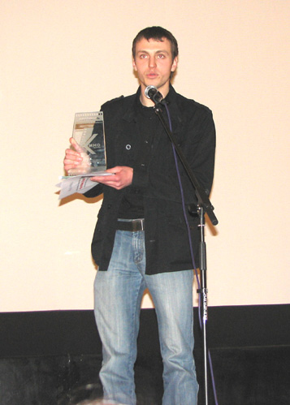

25–26 красавіка ў Мінску ўпершыню прайшоў адкрыты гарадскі маладзёжны фестываль відэаролікаў "Кінагрань", арганізатарамі якога выступілі Студгарадок БДУ і аддзел па справах моладзі Мінгарвыканкама.
Конкурс праходзіў у два этапы. Свае работы прадставілі каля ста студэнтаў сталічных і рэгіянальных ВНУ, навучэнцаў мінскіх сярэдніх школ, а таксама незалежных маладых рэжысёраў. У фінал фестывалю было адабрана 50 найлепшых фільмаў.
Гэтыя ролікі на працягу двух дзён гасцінна дэманстраваў усім жадаючым кінатэатр "Цэнтральны". Самі ўдзельнікі, акрамя прагляду сваіх твораў на вялікім экране, наведалі майстар-класы па рэжысуры і аператарскім майстэрстве, завіталі з экскурсіямі ў Белтэлерадыёкампанію і Музей гісторыі беларускага кіно, сустрэліся з рэжысёрам Віктарам Аслюком і, канешне, знаёміліся, гаманілі, абменьваліся вопытам з калегамі па любімай справе.
"Гран-пры" і вялікі шкляны куб – сімвал "Кінаграні" – займела відэастудыя "SVS" за фільм "Распавядзі мне, воблака". Гэты ролік – гісторыя ў гісторыі: першая аб тым, як у школу прыязджае жанчына з самаробнай лялькай і прапануе дзецям скласці казку з удзелам гэтай выдуманай асобы. Другая – створаная адным з вучняў казка пра смерць хворай на рак дзяўчыны, якую на нябёсах сустракае тая самая лялька. Прадуманае музычнае афармленне, увага да дэталяў (напрыклад – канец роліка: адначасова са смерцю дзяўчынкі канчаецца музыка і гасне свечка) гавораць пра сур'ёзны падыход аўтараў да сваёй работы, а пэўны сацыяльны пафас і выкарыстанне бяспройгрышных, "абкатаных" вобразаў і тэм – пра нацэленасць на перамогу. Нагадаем, што на ІV Міжнародным маладзёжным конкурсе відэафільмаў "Славянскае юнацтва: мары і спадзяванні" ў Маскве відэастудыя "SVS" атрымала галоўны прыз за дакументальны фільм "Паэма веры". На "Кінаграні" ўменне нашых студэнтаў рабіць якаснае дакументальнае кіно таксама было адзначана: Андрэй Куціла і яго каманда сталі героямі намінацыі "Найлепшае дакументальнае кіно" за фільм "Блізкае-далёкае". "SVS" можа ганарыцца яшчэ і тым, што работу студыі ацанілі не толькі вядомыя рэжысёры, дзеячы кіно і тэлебачання, якія складалі журы, але і простыя гледачы – фільм "Насустрач каханай" Аляксея Грыгор'ева атрымаў прыз глядацкіх сімпатый.
Такім чынам, студэнцкая відэастудыя "SVS" Студгарадка БДУ заваявала адразу тры прызы на гэтым фестывалі. Але можна шчыра адмесці ўсе падазрэнні ў залішняй сімпатыі арганізатараў да сваіх гадаванцаў, бо далейшае размеркаванне прызоў і ўзнагарод пераканала – спаборніцтва вялося "на роўных", улічваліся толькі прафесіяналізм, арыгінальнасць мыслення і ўменне цікава падаць відэаматэрыял. Так, Беларуская дзяржаўная акадэмія мастацтваў таксама вынесла з фестывалю некалькі дыпломаў і "малых кінаграняў": у намінацыі "Найлепшае гульнявое кіно" перамог фільм "Лялька" Алены Даніленка, у намінацыі "Сэрца на далоні" – фільм "Жыві" Таццяны Мастыкінай, а фільм "Гульня" Ігара Чышчэні быў узнагароджаны спецыяльным прызам часопіса "На экранах". Фільм "Горад майго спакою" Марыі Курачавай і тэлестудыі сталічнай сярэдняй школы № 4 перамог у намінацыі "Мой Мінск". А стужка "Шчырыя" Алены і Аляксея Рабчанкаў з Гомельскага дзяржаўнага універсітэта імя Францыска Скарыны быў прызнаны найлепшым у намінацыі "Student's life". Фільм "Так мовіў Кагі" Аляксея Марозава і Фёдара Нямцова, што прадстаўлялі "Майстэрню Марозава і Нямцова", атрымаў прыз у намінацыі "Найлепшая аператарская работа". У намінацыі "Найлепшая прэзентацыя" ўзнагароджана серыя сюжэтаў Магілёўскага дзяржаўнага універсітэта імя Аркадзя Куляшова (аўтары – Міхаіл і Алег Ганіны). Пераможцам у намінацыі "Кінанастрой" названы фільм "Маленькі Сусьвет", створаны калектывам аўтараў (Т. Яіна, А. Давыдзенка, А. Барысенка). Прадстаўнікі Беларускага нацыянальнага тэхнічнага універсітэта А. Саўчук, А. Пятроўскі, Я. Лукашэвіч і С. Лапухін з фільмам "Пакетаносцы" заваявалі прыз у намінацыі "Найлепшы гумарыстычны відэаролік". У намінацыі "Найлепшы рэпартаж" перамога дасталася фільму "Пакуты па ежы" Вікторыі Стэльмах са студыі "42". Спецыяльны прыз "Эстэтыка ў новым фармаце" атрымаў фільм "Радыёкропка" каманды "КНР" (яе назва складзена з першых літар прозвішчаў аўтараў: Куціла, Налівайка, Рамашка).
Фестываль "Кінагрань" – лаўрэат конкурсу найлепшых маладзёжных праектаў БДУ 2006 года. Хочацца, каб гэта мерапрыемства стала традыцыйным, з кожным годам збірала ўсё болей таленавітых рэжысёраў і спраўдзілася як пляцоўка для эксперыментаў і росквіту айчыннага кінематографа.

Кіраўнік "SVS" Андрэй Куціла з Гран-пры фестывалю
Маргарыта АЛЯШКЕВІЧ
http://www.gazeta.bsu.by/?uid=1130&type=Article